Icon stacks
Put several apps under one icon. Hold it and they appear in your order, each a tap away.
Arcadia for Android
Hold any icon for its live widget, its notifications and its shortcuts. The app never opens.
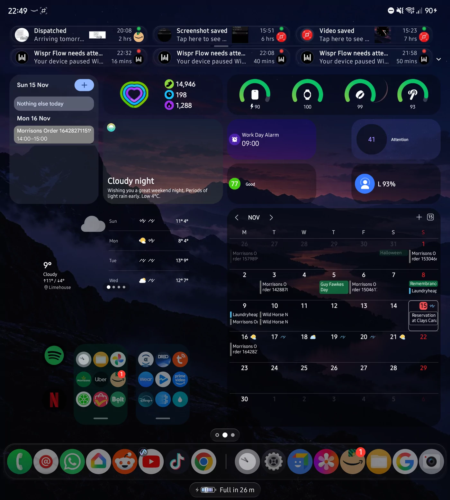
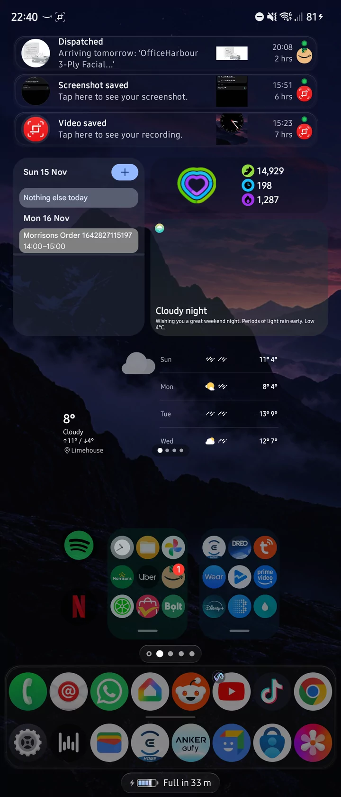
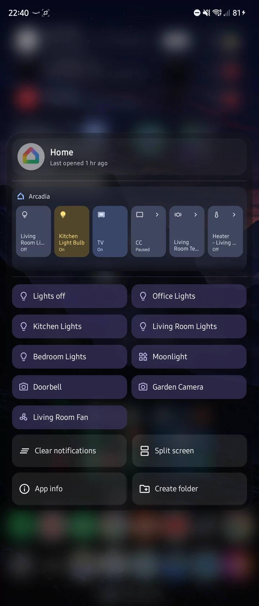
Hold the Home icon
Hold any icon
Its live widget, its latest notifications and its shortcuts, right over your home screen. Tap what you need, let go, and you never left.
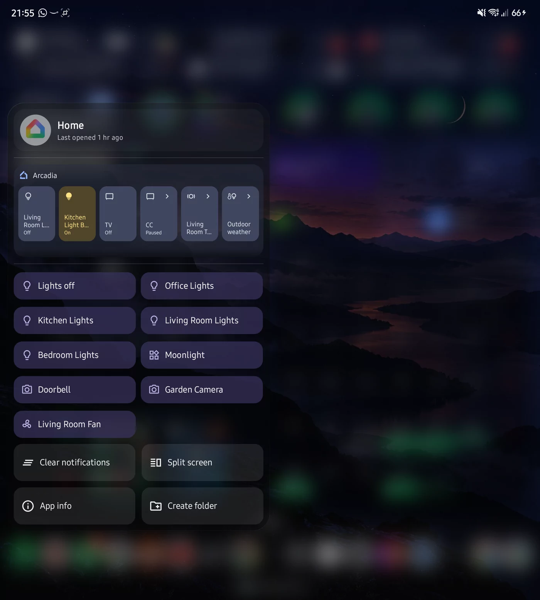
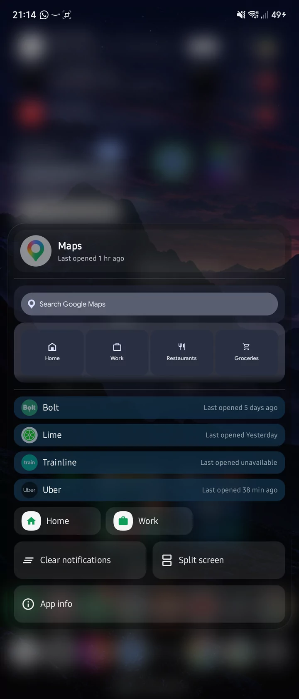
Under a held icon
An icon can carry a stack of apps, a game launcher its games, and an app that is playing its controls.
Put several apps under one icon. Hold it and they appear in your order, each a tap away.
Choose up to six games for one icon. Hold it and each is one tap from playing.
Hold an app that is playing: the artwork, play, pause and next. Skip a track, then let go.
Notifications
New ones land as cards across the top of your home screen, picture and time included. Read them in passing. Turn on history to keep the ones you clear.
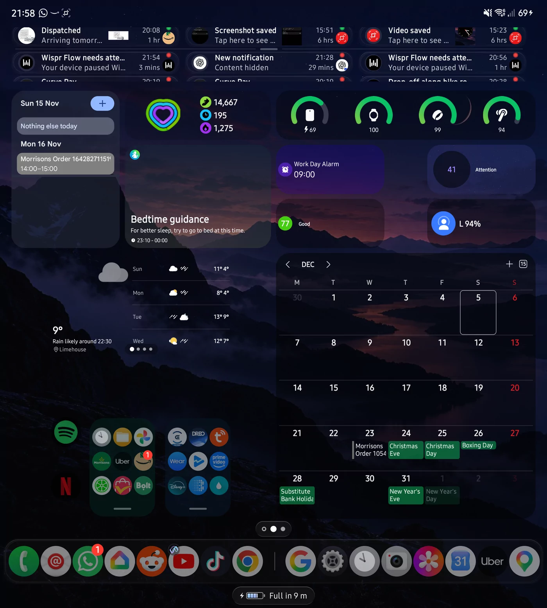
Folded or open
The same layout on the cover screen and the inner screen. Open the phone and it unfolds in place, complete the moment it appears.
Make it yours
Widgets that resize and scale, looks that repaint every icon, folders big enough to live in.
Hold a widget to set its width, height and zoom, right where it sits.
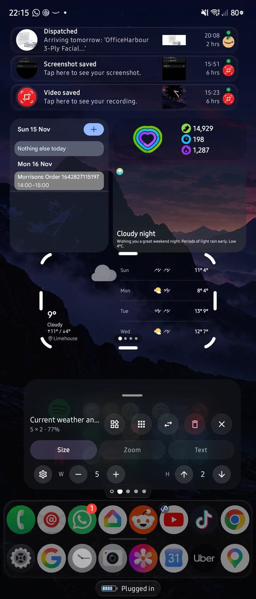
Repaint every icon in one go, then go back just as fast.
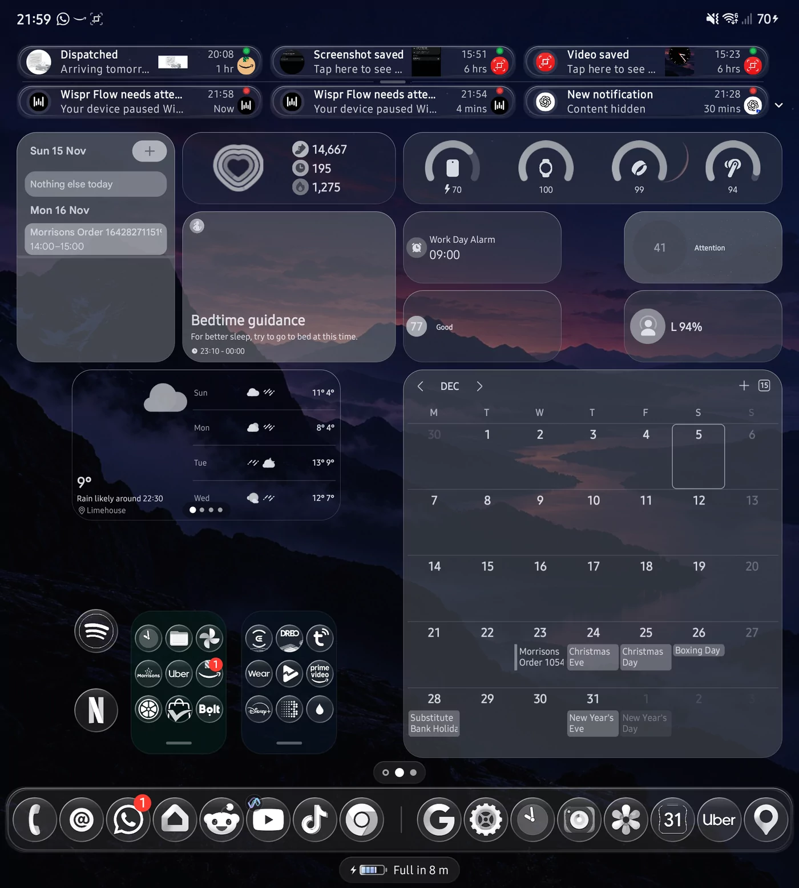
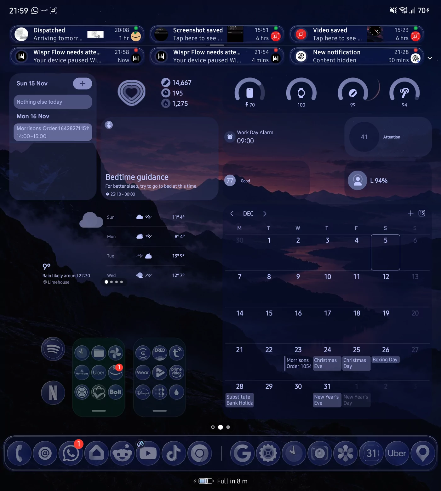
Turn on large folders and every app inside is one tap away.
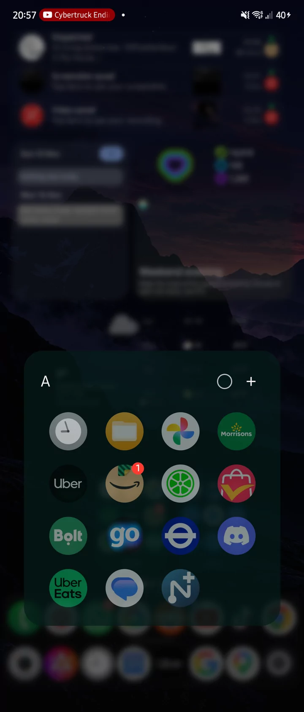
Search, recents and an App Library sorted for you, or A–Z.
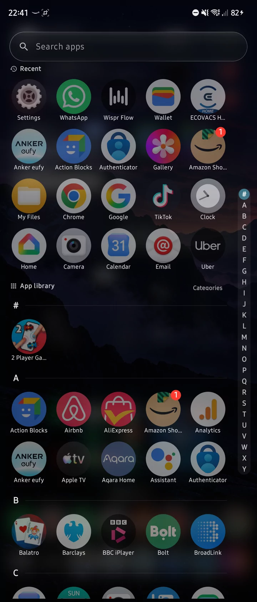
App Blocks put your Google Home routines in the hold panel.
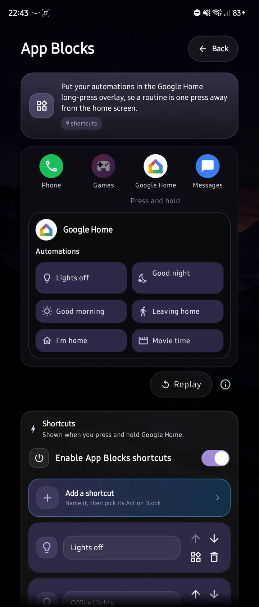
And there is more
Several apps under one icon. Hold it to pick.
Several widgets in one spot. Swipe through them.
One app owns the page left of home. Swipe right and you are in it.
Up to six games you choose, under one icon.
Gone from home, the dock and search. Still installed, still working.
Pages, folders, widgets and settings in a file you keep.
A stray press cannot drag an icon out of place.
Double tap to search or lock. Swipe up for search.
Moved something by mistake? Undo and Redo are right there.
Private by design
Built to respect your privacy.
All six permissions are optional, and Arcadia works without any of them. No account needed. Your home-screen layout and notification history stay in Android’s private app storage.
Clear, simple information about your data. Read the policy.
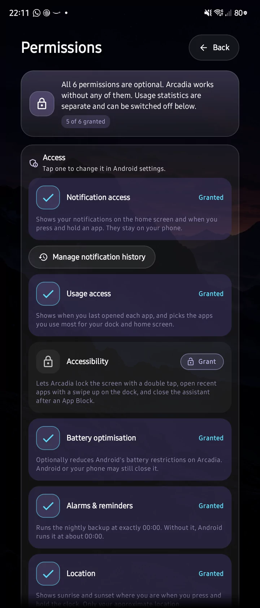
Free on Google Play. No account.
Actual Arcadia screens, recorded on a Galaxy Z Fold.